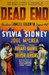
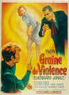

Hail, Hail, the Gangs in Hollywood
By Stu Kobak
The variety of movies featuring youth gangs has crossed each generation since filmdom’s nascent days. Parallels between films as varied as Rumble Fish, Blackboard Jungle and even West Side Story, make up diverse and radically different pieces to the puzzle of an approach that Hollywood has taken on examining the phenomenon of these street rebels. The question of youth alienation goes on, but the answers are not simple. When we make it through the darkness of youthful uncertainty, for most, there is a light at the end of the tunnel.

The first rumble in Rumble Fish is choreographed in exciting fashion by Francis Ford Coppola and clearly harks back along a 25 year old trail that leads directly to Jerome Robbins' staging of the dance fights in West Side Story. It is interesting to see the cross pollination of film genres as filmmaker Coppola dips into the musical
realm to find stylistic inspiration.  
Every youth gang depicted in the movies didn't constantly have fighting on its mind . Even the Our Gang comedies qualify in the broadest sense as Hollywood street gangs, but it is innocent mischief that is the center of their universe. Are these the kids that would grow menacingly into the violent youth gangs of Hollywood depiction? The harmless innocence portrayed in these kid comedies
isn't likely to putrefy into a barrel of rotten teen apples peopling filmdom's future JD flicks.
The role model almost always is featured prominently as the sub-text in the gang film. Rumble Fish's Mickey Rourke as "The Motorcycle Boy" is the pied piper to Coppola's disenchanted delinquents of the Spokane streets. In West Side Story it is the past reputation of former Jet ringleader Richard Beymer that provides inspiration to the younger
Jets led by an admiring Russ Tamblyn. Whether Bogart in Dead End or Cagney in "Angels", the lure of the dark side looms significantly in the lives of the street gang kids.
Once Upon a Time in America presents the youth gang and moves on in time to the same characters after their guns have grown and they have developed into big time mobsters. Of films that focus on the nature of gangs, it is one of the few that give the viewer a chance to compare the youthful gang members with their mature incarnations. Once Upon a Time in America also differs from other typical street gang films in that these kids do not emulate or look up to any particular figures of influence in their childhood. Perhaps this is because as since the film follows them to manhood, as youths, they are actually anticipating the vision of their own manhood Try and parallel the kids of Leone's vision to
those of many of the films that influenced him. Would the kids who idealized Bogart have matured into Leone's hitmen and psychos?
Romper Stomper paints one of the most horrifying gang canvases ever painted in blood red strokes on a movie canvas. The Australian film is a vision fueled by hate and fear. The future of these kids is all too clear. They will surely become the motorcycle madmen of George Miller's dark apocalyptic road movies, Mad Max and The Road Warrior.
Youth gangs often band together because of their ethnocentric nature. Romper Stomper pits the Aussie gang against immigrant Vietnamese youths. Do the gangs form as a measure of protection against a hostile environment? In Year of the Dragon, Chinese youth gangs rule the streets in ruthless fashion, often working at the bidding of their elders, waiting for the moment that they will be accepted into
the underworld fraternity. Blood In, Blood Out, Taylor Hackford’s epic view on the street gangs of Los Angeles, details the Hispanic youth experience.
Recent years have seen a proliferation of black youth pictures, as young filmmakers are getting their chance to express themselves. Looking at the frustrations and seductiveness of the ghetto, the Hughes Brothers, John Singleton, Matty Rich and other novice black directors have made their mark on the industry with frightening and vital visits to the darkness that plagues minorities. Menace II Society,
Boyz on the Hood, Straight Out of Brooklyn, and South Central are all films that succeed in looking at the plight of youths in the ghetto and the limited escape routes that are open to them. The fascination of youth gangs is a magnet to young directors. Allison Anders has joined the foray into alienation with a female take on girls in leather jackets, Mi Loca Vida.
What all these films do have in common is the sense of alienation that pervades them. Change the period setting and often the ethnic background can be interchangeable. What is certain is that the streets are fertile ground for volatile film entertainment.
Quite a few gang titles have been released on DVD. West Side Story presented in anamorphic widescreen is a terrific transfer on DVD. The movie hasn't looked as good since it's theatrical road show appearances. Menace II Society is available in a handsome widescreen transfer from Disney. It's very sharp with great depth of color. Boyz on the Hood is transferred anamorphic
widescreen on a first class DVD from Columbia. Stand and Deliver is part of Warner's budget line and is unfortunately available only pan & scan on DVD. Clockers is a contemporary look at street gangs and drug pushing from director Spike Lee. Available in an anamorphic widescreen transfer from Universal, it's high contrast style and grainy look don't make for great video.


 Kinoeye Archive
Kinoeye Archive
This is a resource of all content-rich materials on the web relating to Central and East European cinema. The ultimate aim of the Kinoeye Archive is to provide a near-as-damn-it definitive index of intelligent and thoughtful English-language analysis of Central and Eastern European cinema on the web.
 Brad Lang continues to add more interesting to the extensive collection at Classic Movies. Everything from actors and actress to your favorite directors is linked at the site.
Brad Lang continues to add more interesting to the extensive collection at Classic Movies. Everything from actors and actress to your favorite directors is linked at the site.

News, information, features about current films in theaters and in the pipeline. Easy to use interface.

Buy and sell pre-owned books, movies, music and games. Half.com lets visitors buy and sell used books, CDs etc. for half price. Sellers pay a 15% commission; buyers get a money back guarantee.

The official site for information about the great comic director. A treat for connoisseurs of classic Hollywood madcap.

The home of director Kevin Smith, replete with inside info on his films like Clerks, Mall Rats, Chasing Amy and Dogma.

First Run Features boasts a library of independent and foreign features available on DVD and VHS. Check out their web site for catalog details.

The Feature Archive has articles ranging from Akira Kurosawa to Blonde Bimbos.
Roman Holiday
Join the editor and his family on a trip through Roman movie sites in this unusual feature.

The Movie Poster Archive include extensive poster images from the films of stars like Susan Hayward, Kirk Douglas, Katharine Hepburn and many more. Our featured star is Burt Lancaster.

Need a daily fix of movie quotes. Reel Quotes Newsletter has the answer. Click on the Reel Quotes symbol for more.